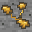
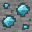

Oro
Vetas conectadas, tonos ámbar y reflejos cálidos.

Vetas irregulares y cristales incrustados en la misma piedra del mundo. Gira los bloques para ver sus caras.
Vetas conectadas, tonos ámbar y reflejos cálidos.

Cristales agrupados, facetas claras y cavidades oscuras.

Vista de las nuevas texturas. En el juego, el aspecto depende de la luz y la niebla del entorno.